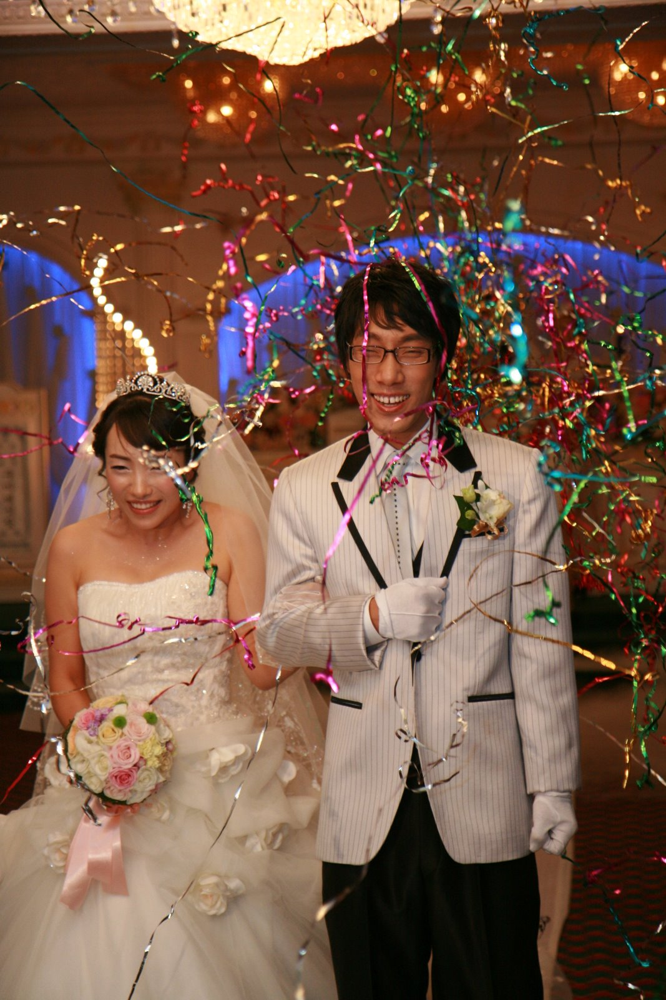

2008-11-22 05:02:27

여러분들의 많은 도움 속에 무사히(!) 결혼식을 마쳤습니다... 라고 글을 적기에는 조금 시간이 많이 지났네요 ^^;; 결혼식하고 신혼여행을 갔다온 후로 어찌나 해야할 일들이 많은지 결혼식 후 한달은 주말에 쉴 틈이 없었습니다. 신랑측 친척집에 인사하고, 신부측 친척집에 인사하고, 결혼 한창할 가을이라 다른 결혼식 다니고... 그렇게 한달이 지나갔습니다.
그리고 저는 이태리로 출장을 왔습니다;; 결혼 후 한달, 그리고 한달 예정의 이태리 출장... 네 누구 말마따나 인생은 이런겁니다 -0-/ 그래도 크리스마스와 새해를 맞이하기 전에 신혼집으로 복귀하는 것이 목표라는 희망찬 삶을 살고 있습니다~
일단 어느 정도 시간이 흘러서 결혼 사진을 정리해서 올립니다. 저희의 결혼식을 멀리서 축하해주신 분들과 그 시간을 함께했던 분들을 위해 올려봅니다 ^^
http://wedding.wimy.com/weddingDay.php
ps : 이제 남은 것은 여러분들이 기대하는 신혼여행 사진? ㅋㅋ